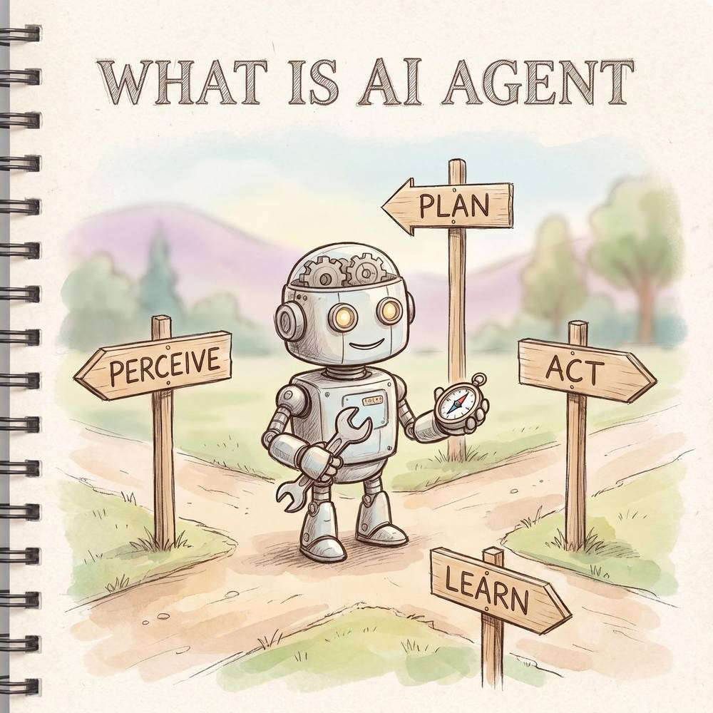
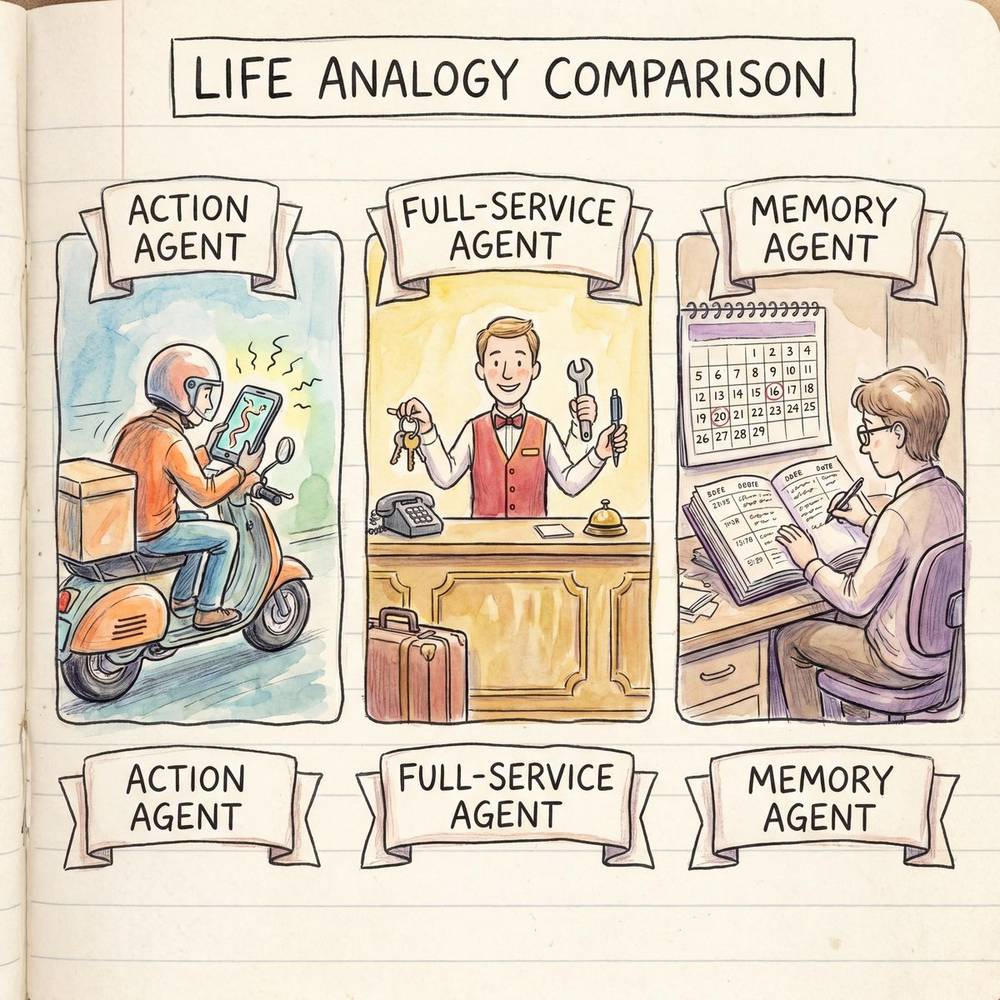
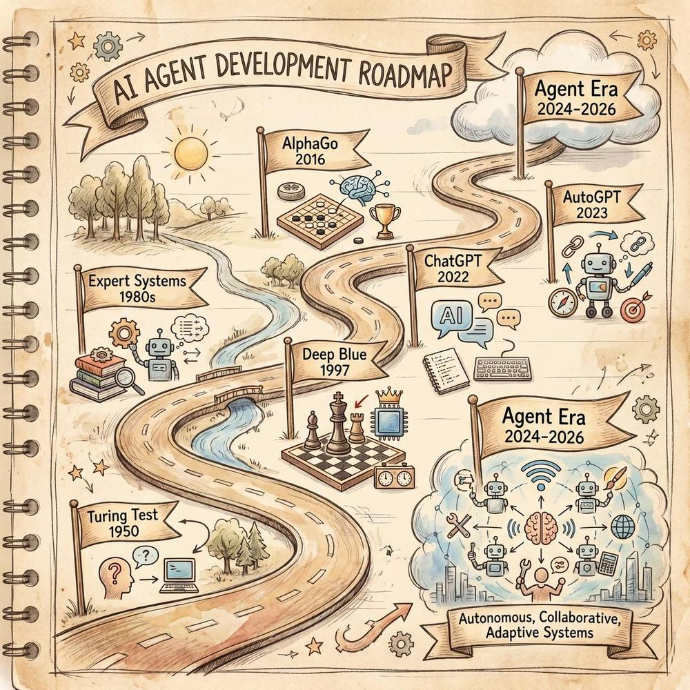

第一章：AI Agent 概述
"AI Agent 全面学习指南" 系列 · 第一章
本章将带你从零开始理解 AI Agent（智能体）的核心概念、发展脉络与分类体系，并解释为什么 2024—2026 年被称为 "Agent 爆发期"。无论你是技术从业者还是对 AI 充满好奇的普通读者，都可以在本章找到清晰的入门路径。
1.1 什么是 AI Agent（智能体）
1.1.1 定义
AI Agent（人工智能智能体）是指一种能够自主感知环境、进行推理决策、采取行动并持续学习的软件实体。与传统的"你问我答"式 AI 不同，Agent 具备更强的自主性——它不仅能回答问题，还能主动拆解目标、规划步骤、调用工具、在失败时自我纠错，直到完成最终任务。
用一句话概括：
AI Agent = 大语言模型（LLM） + 记忆（Memory） + 规划（Planning） + 工具使用（Tool Use） + 行动（Action）
如果把大语言模型比作"大脑"，那么 Agent 就是拥有"四肢、五官和记忆力"的完整智慧生命体。大语言模型本身只能"思考"，而 Agent 能够把思考变成行动，并在行动中不断学习和优化。
1.1.2 AI Agent 的六大核心特征
| 核心特征 | 含义 | 生活类比 |
|---|---|---|
| 自主性（Autonomy） | 能够在没有人类逐步指令的情况下独立完成任务 | 你只需告诉管家"准备晚宴"，而不必说"先去菜市场、再洗菜、再炒菜" |
| 感知（Perception） | 能够获取和理解外部环境信息，包括文本、图像、API 返回数据等 | 司机能看到红绿灯、路况和导航信息 |
| 推理（Reasoning） | 基于感知到的信息，运用逻辑和知识进行分析判断 | 医生根据症状和检查报告推断病因 |
| 行动（Action） | 能够通过调用工具、执行代码、发送请求等方式作用于外部世界 | 厨师不仅知道菜谱，还能真正把菜做出来 |
| 学习（Learning） | 能够从历史交互和反馈中不断优化自身表现 | 新员工第一周常犯错，但一个月后就得心应手了 |
| 记忆（Memory） | 拥有短期记忆（当前对话上下文）和长期记忆（跨会话的知识沉淀） | 你的私人秘书记得你的饮食偏好、日程习惯和重要客户的信息 |
这六大特征并非独立存在，而是形成一个"感知→推理→行动→学习"的闭环。Agent 不断重复这个循环，使自己在每一次交互中都变得更"聪明"、更"靠谱"。
1.1.3 Agent 的基本工作流程
一个典型的 AI Agent 工作循环如下：

- 接收目标 — 用户提出一个高层次的需求（如"帮我调研竞品并写一份分析报告"）
- 任务规划 — Agent 将目标拆解为多个子任务（搜索竞品信息 → 整理数据 → 撰写报告 → 格式化输出）
- 感知环境 — 通过搜索引擎、数据库、API 等渠道获取所需信息
- 推理决策 — 对获取的信息进行分析、比较和筛选
- 执行行动 — 调用工具完成具体操作（写文档、生成图表、发送邮件等）
- 自我评估 — 检查输出是否符合目标要求，若不符合则回到第 2 或第 3 步进行调整
- 返回结果 — 将最终成果交付给用户
整个过程中，Agent 会将关键信息存入记忆系统，以便在后续任务中复用。这就是 Agent 与"一次性问答"最大的区别——它拥有持续性和上下文连贯性。
1.2 生活中的 Agent 类比
AI Agent 听起来是一个很"技术"的概念，但其实它的逻辑在我们的日常生活中处处可见。下面用几个常见角色来帮你理解。
🛵 外卖骑手：一个典型的 "行动型 Agent"
想象一下外卖骑手的工作流程：
- 接收目标：平台派单，目标是"在 30 分钟内将这份外卖送到用户手中"
- 感知环境：查看导航路线、实时路况、天气情况
- 推理决策：选择最优路线——走大路虽然远但不堵车，还是抄近道但可能要爬楼？
- 执行行动：骑车出发、取餐、配送
- 自我纠错：发现某条路封了？立刻重新规划路线
- 学习优化：跑了一个月后，骑手对每个小区的最快入口了如指掌
AI Agent 的工作逻辑几乎一模一样——它接收任务、分析情况、制定计划、执行操作，遇到障碍就重新规划，并且每次都在积累经验。
🏨 酒店管家：一个 "全能型 Agent"
五星级酒店的私人管家是一个更高级的 Agent 类比：
- 你只需说"帮我安排明天的行程"，管家就会自动考虑你的喜好（记忆）、查询景点和餐厅信息（感知）、根据距离和时间合理安排顺序（推理）、帮你预订门票和餐位（行动），甚至提前准备好雨伞因为明天有雨（主动预判）。
- 管家不需要你一步步下达指令，他能自主完成从规划到执行的全过程。
- 如果某个餐厅满座，管家会自动切换到 Plan B，而不是停下来等你指示。
这正是 AI Agent 追求的理想状态：你给出目标，Agent 搞定一切。
📋 私人秘书：一个 "记忆增强型 Agent"
一位优秀的私人秘书与普通助理最大的区别在于记忆力和主动性：
- 她记得你不喝咖啡只喝茶（长期记忆）
- 她知道你今天下午有一个重要会议（短期记忆/上下文感知）
- 她会在会议前 15 分钟提醒你，并准备好会议材料（主动行动）
- 她能根据你以往的决策风格，预判你可能的选择（学习与推理）
AI Agent 中的"记忆模块"就是在模拟这种能力——让 AI 不再是"金鱼记忆"，而是能够记住你的偏好、历史操作和项目上下文，提供越来越个性化的服务。
类比总结
| 生活角色 | 对应的 Agent 能力 | 关键特点 |
|---|---|---|
| 外卖骑手 | 感知 + 规划 + 行动 + 纠错 | 在动态环境中快速完成目标 |
| 酒店管家 | 全能型——六大特征兼备 | 高度自主，目标驱动 |
| 私人秘书 | 记忆 + 学习 + 主动服务 | 个性化、持续性、上下文感知 |
| 自动驾驶汽车 | 感知 + 实时推理 + 连续行动 | 毫秒级反应，安全第一 |
| 游戏 NPC（高级） | 推理 + 适应玩家行为 + 学习 | 动态调整策略 |
通过这些类比，你应该能感受到 AI Agent 的核心理念：它不是一个等着你输入问题的搜索框，而是一个能理解目标、自主行动、持续学习的"数字员工"。

1.3 AI Agent 与传统 AI 的区别
1.3.1 核心差异对比
很多人会问："ChatGPT 不就是 AI Agent 吗？" 答案是：不完全是。ChatGPT（以及其他大语言模型）是 Agent 的"大脑"，但 Agent 是一个更完整的系统。下面用一张表格来说明它们的核心差异：
| 维度 | 传统 AI / 大语言模型 | AI Agent |
|---|---|---|
| 交互方式 | 一问一答（单轮或多轮对话） | 接收目标后自主执行多步骤任务 |
| 任务执行 | 生成文本回答，不直接操作外部系统 | 能调用 API、执行代码、操作数据库、控制浏览器等 |
| 规划能力 | 仅在单次回答中做简单推理 | 能将复杂目标拆解为子任务并按顺序/并行执行 |
| 记忆 | 仅限当前对话窗口（上下文窗口有限） | 具备短期记忆 + 长期记忆，可跨会话保持信息 |
| 环境感知 | 被动接收用户输入的文本 | 主动从多种数据源获取实时信息 |
| 自我纠错 | 无法自动检测和修复错误 | 能检查输出质量，发现问题后自动调整策略 |
| 工具使用 | 不具备（或仅通过插件有限使用） | 原生支持调用搜索引擎、代码解释器、数据库等各类工具 |
| 典型代表 | GPT-4（纯对话）、BERT、传统推荐算法 | AutoGPT、Claude Agent（Claude Code）、OpenAI Assistants API、Manus |
1.3.2 一个形象的类比：导航 App vs 专职司机
传统 AI 就像一个导航 App：
- 你告诉它目的地，它给你一条路线
- 但它不会帮你开车、不会帮你找停车位、不会帮你绕开突然出现的施工路段
- 路线出了问题，它最多重新计算，但不会主动决定是否要改变出行方式（比如改坐地铁）
- 它只负责"给建议"，具体执行全靠你自己
AI Agent 就像一个专职司机（或自动驾驶汽车）：
- 你只需要说"带我去机场，下午三点的航班"
- 司机会自动考虑当前时间、路况、天气，选择最优路线
- 遇到堵车会自动绕路，如果时间紧迫可能建议走高速甚至换交通方式
- 到了机场还会帮你找到出发航站楼的最佳下车点
- 下次你再去机场，司机还记得你上次的偏好（比如喜欢在 T2 停靠）
核心区别总结：
传统 AI 是"提供信息的顾问"，AI Agent 是"完成任务的执行者"。
传统 AI 告诉你"应该怎么做"，AI Agent 直接"帮你做完"。当然，这并不是说传统 AI 没有价值——恰恰相反，大语言模型是 Agent 最重要的基础设施。没有强大的 LLM 做"大脑"，Agent 的推理和规划能力就无从谈起。
1.3.3 从 Copilot 到 Agent：AI 辅助的三个层次
为了更完整地理解这个演进过程，我们可以把 AI 辅助能力分为三个层次：
| 层次 | 名称 | 描述 | 代表产品 |
|---|---|---|---|
| Level 1 | AI 工具 | 完成单一、明确的任务（翻译、摘要、生成图片） | 百度翻译、Midjourney |
| Level 2 | AI Copilot | 在人类工作流程中提供实时建议和辅助 | GitHub Copilot、Notion AI |
| Level 3 | AI Agent | 接收高层目标后自主规划、执行、纠错，完成端到端任务 | Claude Agent、Manus、AutoGPT |
当前行业正从 Level 2 快速向 Level 3 过渡。这也是为什么"AI Agent"成为 2024—2026 年最热门的技术话题。
1.4 AI Agent 的发展历程与里程碑
AI Agent 并不是突然出现的新概念。事实上，"智能体"的思想可以追溯到人工智能诞生之初。以下按三个大阶段梳理其发展脉络。
1.4.1 阶段一：早期探索期（1950s — 2000s）
这一阶段的核心特点是基于规则和符号推理的智能体，它们只能在严格定义的环境中运行。
| 年份 | 里程碑事件 | 意义 |
|---|---|---|
| 1950 | 图灵发表《Computing Machinery and Intelligence》 | 首次提出"机器能否思考"的问题，为智能体概念奠基 |
| 1956 | 达特茅斯会议，"人工智能"正式命名 | AI 作为学科诞生，智能体研究有了理论根基 |
| 1966 | MIT 开发 ELIZA 聊天机器人 | 最早的对话式 Agent，虽然只是基于模式匹配 |
| 1972 | MYCIN 专家系统诞生 | 医疗诊断领域的规则型 Agent，能根据症状推理疾病 |
| 1986 | Rodney Brooks 提出"行为主义 AI"架构 | 强调 Agent 应直接与环境交互，而非依赖内部世界模型 |
| 1995 | Stuart Russell & Peter Norvig 出版《人工智能：现代方法》 | 系统定义了智能体的分类体系，成为 AI 领域经典教材 |
| 1997 | IBM "深蓝"击败国际象棋世界冠军 | 展示了 Agent 在特定领域超越人类的可能性 |
早期 Agent 的局限性非常明显：它们依赖人类手工编写的规则，无法处理规则之外的情况，更谈不上学习和泛化。
1.4.2 阶段二：多智能体与强化学习时代（2000s — 2022）
这一阶段，随着机器学习特别是深度学习的崛起，Agent 开始具备从数据中学习的能力。
| 年份 | 里程碑事件 | 意义 |
|---|---|---|
| 2013 | DeepMind 发表 DQN 论文 | 深度强化学习让 Agent 能通过"试错"学会玩 Atari 游戏 |
| 2016 | AlphaGo 击败围棋世界冠军李世石 | Agent 在最复杂的棋类游戏中超越人类，震惊世界 |
| 2017 | Transformer 架构发布（《Attention Is All You Need》） | 奠定了大语言模型的基础，间接催生了 LLM Agent 时代 |
| 2018 | OpenAI Five 在 Dota 2 中击败人类职业队 | 多智能体协作的里程碑，展示了 Agent 团队协同作战的能力 |
| 2019 | GPT-2 发布 | 展示了大型语言模型的文本生成能力，但尚未具备 Agent 特性 |
| 2020 | GPT-3 发布（175B 参数） | 少样本学习能力使 LLM 具备了作为 Agent "大脑"的潜力 |
| 2021 | 多智能体仿真研究兴起 | 学术界开始系统研究多个 Agent 协作与竞争的动态行为 |
这一阶段的关键转折点是 Transformer 和大语言模型的出现——它们为后来的 LLM Agent 提供了前所未有的推理和语言理解能力。

1.4.3 阶段三：LLM Agent 时代（2023 — 2026+）
2023 年是 AI Agent 真正进入公众视野的转折之年。GPT-4 的发布让人们看到了 LLM 作为 Agent "大脑"的巨大潜力，一系列标志性项目接连涌现。
| 年份 | 里程碑事件 | 意义 |
|---|---|---|
| 2023.03 | GPT-4 发布 | 强大的推理能力使其成为 Agent 的理想"大脑" |
| 2023.03 | AutoGPT 开源项目爆火 | 首个被广泛关注的自主 Agent 框架，GitHub 星标迅速破 10 万 |
| 2023.05 | "Generative Agents" 论文发布（斯坦福 x Google） | 25 个 AI Agent 在模拟小镇中自主生活、社交，引发广泛讨论 |
| 2023.06 | OpenAI Function Calling 发布 | 标准化了 LLM 调用外部工具的方式，Agent 开发门槛大幅降低 |
| 2023.11 | OpenAI Assistants API 发布 | 官方提供了带记忆、工具调用、代码执行的 Agent 框架 |
| 2024.03 | Claude 3 发布，Anthropic 推出 Tool Use 能力 | Agent 的"大脑"选择更加多元化 |
| 2024.06 | 多家企业推出 Agent 平台（Coze、Dify、LangGraph 等） | Agent 开发从"极客玩具"走向"企业工具" |
| 2024.11 | Anthropic 提出 MCP（Model Context Protocol） | 统一了 Agent 与外部工具/数据源的连接协议，被称为"Agent 的 USB-C" |
| 2025.02 | Manus 发布，通用 AI Agent 产品引爆热议 | 展示了 Agent 在真实办公场景中端到端完成复杂任务的能力 |
| 2025.05 | Claude Agent（Claude Code）大规模商用 | 开发者 Agent 成为日常编程工作流的核心组件 |
| 2026 | Agent 生态持续成熟，多 Agent 协作成为主流架构 | 从"单 Agent 执行"走向"多 Agent 团队协作"的新阶段 |
这个阶段的核心特征是：Agent 不再只是学术研究的对象，而是变成了人人可用的生产力工具。
1.5 AI Agent 的分类
AI Agent 有多种分类方式，最经典的是按照自主程度和决策复杂度进行分类。以下体系基于 Russell & Norvig 的经典框架，并结合 LLM 时代的新发展进行了扩展。
1.5.1 五大 Agent 类型
| 类型 | 英文名称 | 核心机制 | 优点 | 局限性 | 典型应用 |
|---|---|---|---|---|---|
| 简单反射型 | Simple Reflex Agent | 基于"如果…就…"的条件规则直接响应 | 简单高效、响应快 | 无法处理规则外的情况，无记忆 | 温控器、简单的客服FAQ机器人 |
| 基于模型的反射型 | Model-Based Reflex Agent | 维护一个内部"世界模型"来追踪环境状态 | 能应对部分不可见的环境 | 模型可能不准确，维护成本高 | 扫地机器人、库存管理系统 |
| 目标驱动型 | Goal-Based Agent | 以明确目标为导向，搜索达到目标的行动序列 | 能进行前瞻性规划 | 需要清晰的目标定义，计算成本较高 | 路径规划、项目管理Agent |
| 效用驱动型 | Utility-Based Agent | 为每种可能的状态计算"效用值"，选择效用最高的行动 | 能在多个目标间权衡取舍 | 效用函数的设计非常困难 | 投资组合优化、广告投放Agent |
| 学习型 | Learning Agent | 具备从经验中学习和自我改进的能力 | 能持续优化、适应新环境 | 需要大量交互数据，学习过程可能不稳定 | 基于LLM的智能助手、自适应推荐系统 |
1.5.2 从"恒温器"到"学习型 Agent"的进化路径
我们可以用一个直观的进化链来理解这五种类型的递进关系：
简单反射型 → 基于模型 → 目标驱动 → 效用驱动 → 学习型
(恒温器) (扫地机器人) (导航系统) (理财顾问) (AI 私人助理)- 简单反射型就像一个恒温器：温度高了就开空调，温度低了就关空调。它没有记忆，不知道"外面正在降温所以等会儿会更冷"。
- 基于模型的反射型就像一个高级扫地机器人：它不仅感知到眼前有障碍物，还在内部地图上标记了已清扫和未清扫的区域。
- 目标驱动型就像一个导航系统：它知道你的目的地（目标），会计算从当前位置到达目的地的最优路径。
- 效用驱动型就像一个理财顾问：它不仅要帮你赚钱（目标），还要在风险和收益之间找到最优平衡（效用最大化）。
- 学习型就像一个优秀的 AI 私人助理：它一开始可能不了解你的偏好，但用得越多就越"懂"你，能力也越来越强。
1.5.3 LLM 时代的新分类维度
除了经典分类外，在 LLM Agent 时代，还出现了一些新的分类维度：
按 Agent 数量分：
- 单 Agent 系统：一个 Agent 独立完成所有任务（如 Claude Agent 帮你写代码）
- 多 Agent 系统：多个 Agent 分工协作（如一个 Agent 负责调研、一个负责写作、一个负责审校）
按应用场景分：
- 对话型 Agent：以自然语言交互为主（如智能客服）
- 编程型 Agent：专注于代码生成、调试和部署（如 Claude Code、Cursor Agent）
- 数据分析 Agent：自主完成数据清洗、分析和可视化
- 自动化流程 Agent：执行跨系统的业务流程自动化（如 RPA + LLM）
按自主程度分（Anthropic 的分级体系）：
| 级别 | 名称 | 人类参与度 | 描述 |
|---|---|---|---|
| L1 | 聊天机器人 | 全程指导 | 每一步都由人类输入驱动 |
| L2 | AI Copilot | 高度参与 | AI 提供建议，人类做最终决策 |
| L3 | 半自主 Agent | 关键节点审批 | Agent 自主执行大部分步骤，但在关键决策点请求人类确认 |
| L4 | 全自主 Agent | 仅在异常时介入 | Agent 完成端到端任务，仅在遇到无法解决的问题时求助人类 |
| L5 | 完全自主 Agent | 无需人类参与 | Agent 独立完成所有工作，包括自我纠错和异常处理（目前尚未完全实现） |
当前主流的 AI Agent 产品大多处于 L3—L4 之间，即"半自主到全自主"的过渡阶段。
1.6 为什么 2024—2026 是 Agent 爆发期
如果你关注科技动态，你会发现"AI Agent"这个词在 2024 年之后几乎无处不在。从 OpenAI 到 Anthropic，从谷歌到国内的各大科技公司，几乎所有的 AI 领先企业都在押注 Agent 赛道。那么，是什么促成了这次爆发？
1.6.1 大语言模型能力的质变
Agent 的核心是"大脑"，而大脑的能力在 2023—2025 年经历了指数级的提升：
- 推理能力跃升：从 GPT-3.5 的"基本能用"到 GPT-4、Claude 3.5 Sonnet 的"接近人类专家级推理"，LLM 终于能胜任复杂的多步骤规划任务
- 长上下文窗口：从 4K Token 扩展到 100K 甚至 200K Token，Agent 可以在一次会话中处理大量信息
- 多模态能力：支持文本、图像、音频、视频的理解，Agent 的"感知"能力大幅增强
- 指令遵循能力提升：模型能更精确地理解和执行复杂指令，减少了 Agent 的"跑偏"概率
可以说，2024 年的 LLM 才真正具备了作为 Agent "大脑"的及格线。
1.6.2 工具调用的标准化
Agent 要想执行任务，必须能够调用外部工具。而在 2023 年之前，让 LLM 调用工具是一件非常"粗糙"的事情——需要大量的 Prompt Engineering 和各种 hack。
关键突破：
- OpenAI Function Calling（2023.06）：第一次为 LLM 的工具调用提供了标准化接口
- Anthropic Tool Use（2024.03）：Claude 原生支持工具调用，进一步规范了协议
- 各大模型厂商跟进：Google Gemini、Meta Llama 等都推出了类似的工具调用能力
标准化意味着：开发者不再需要为每个模型单独适配工具调用逻辑，Agent 的开发效率大幅提升。
1.6.3 MCP 协议：Agent 的 "USB-C"
2024 年 11 月，Anthropic 推出了 MCP（Model Context Protocol），这是 Agent 发展史上的一个标志性事件。
MCP 解决了什么问题？
在 MCP 之前，每个 Agent 与每个外部工具/数据源之间都需要单独的适配——就像早期每个手机品牌都有自己的充电线。MCP 提供了一个统一的连接协议，让 Agent 可以用同一种方式接入任何支持 MCP 的工具和数据源。
MCP 的核心价值：
| 方面 | 无 MCP | 有 MCP |
|---|---|---|
| 工具接入方式 | 每个工具需要单独开发适配器 | 统一协议，一次接入即可 |
| 开发成本 | 高（N 个模型 × M 个工具 = N×M 个适配器） | 低（N + M 个适配器即可） |
| 安全性 | 各自为政，安全标准不一 | 统一的权限控制和安全机制 |
| 生态兼容性 | 碎片化，各平台不互通 | 开放标准，跨平台互通 |
MCP 的出现，被很多人比喻为"Agent 时代的 HTTP 协议"——它为 Agent 生态的繁荣提供了必要的基础设施。截至 2026 年初，MCP 已被数千个工具和服务支持，成为事实上的行业标准。
1.6.4 开源生态的爆发
Agent 的快速发展离不开活跃的开源社区。以下是一些关键的开源项目和框架：
- LangChain / LangGraph：最流行的 Agent 开发框架之一，提供了链式调用和图结构的工作流编排能力
- AutoGPT / AutoGen：微软开源的多 Agent 协作框架
- CrewAI：专注于多 Agent 角色扮演和协作的框架
- Dify：开源的 Agent 应用开发平台，降低了非技术人员构建 Agent 的门槛
- OpenAI Agents SDK：开源的 Agent 构建工具包，支持 handoffs、guardrails 等高级特性
开源生态使得任何开发者都能低成本地构建自己的 Agent，而不必依赖少数大公司的闭源 API。这种"民主化"极大地加速了 Agent 技术的迭代和应用落地。
1.6.5 企业级需求的爆发
最终推动 Agent 爆发的，是来自企业端的真实需求。
- 降本增效的压力：全球经济不确定性下，企业迫切需要用 AI 替代重复性人力工作
- 知识工作者的生产力瓶颈：信息检索、报告撰写、数据分析等任务占据了知识工作者大量时间，Agent 可以将这些任务自动化
- 跨系统协作的痛点：企业内部系统繁多（CRM、ERP、OA、项目管理等），Agent 可以充当"连接器"，打通数据孤岛
- 客户体验的竞争：在客户服务、销售支持等场景，能自主解决问题的 Agent 比传统客服机器人提供了质的飞跃
据多家市场调研机构预测，全球 AI Agent 市场规模将从 2024 年的约 50 亿美元增长到 2028 年的超过 600 亿美元，年复合增长率超过 80%。
1.6.6 总结：五股力量的汇聚
┌─────────────────────────────────────────────────────┐
│ Agent 爆发的五股推动力 │
│ │
│ ① LLM 能力跃升 ──→ Agent 有了足够强的"大脑" │
│ ② 工具调用标准化 ──→ Agent 有了"手和脚" │
│ ③ MCP 协议 ──→ Agent 有了"万能接口" │
│ ④ 开源生态爆发 ──→ 人人都能构建 Agent │
│ ⑤ 企业需求驱动 ──→ Agent 有了真实的应用场景 │
│ │
│ 五力汇聚 → 2024-2026 Agent 时代开启 │
└─────────────────────────────────────────────────────┘这五股力量的同时成熟，造就了一个"天时地利人和"的完美时间窗口。这就是为什么 Agent 不是在 2020 年、也不是在 2023 年，而恰恰是在 2024—2026 年迎来了真正的爆发。
本章小结
在这一章中，我们从以下几个维度全面了解了 AI Agent：
- 定义与特征：AI Agent 是具备自主性、感知、推理、行动、学习和记忆六大能力的智能软件实体
- 生活类比：通过外卖骑手、酒店管家、私人秘书等角色，理解 Agent 的核心逻辑
- 与传统 AI 的区别：Agent 是"任务执行者"，而非"信息顾问"；如同"专职司机"之于"导航App"
- 发展历程：从 1950s 的符号 AI 到 2023+ 的 LLM Agent，经历了三个大阶段的演进
- 分类体系：按自主程度分为五大类型，从简单反射到学习型；LLM 时代还衍生出多种新的分类维度
- 爆发原因：LLM 能力跃升、工具标准化、MCP 协议、开源生态和企业需求五力汇聚
下一章预告：在第二章中，我们将深入解析 AI Agent 的核心架构——"大脑"（LLM）、"记忆"（Memory）、"规划"（Planning）和"工具"（Tools）是如何协同工作的。这将为你后续动手构建自己的 Agent 打下坚实的理论基础。
本文为"AI Agent 全面学习指南"系列的第一章，持续更新中。